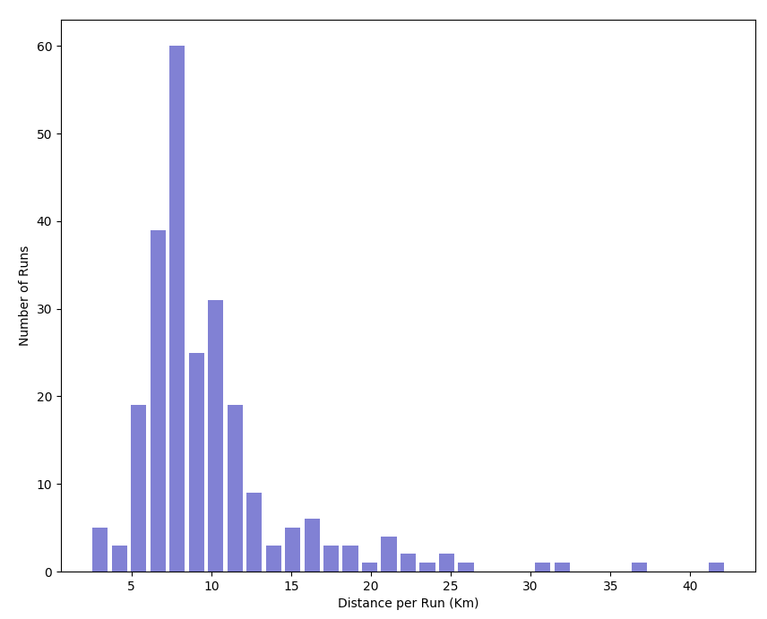
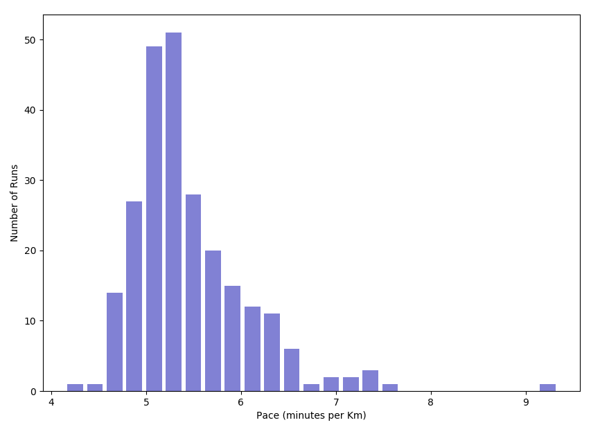
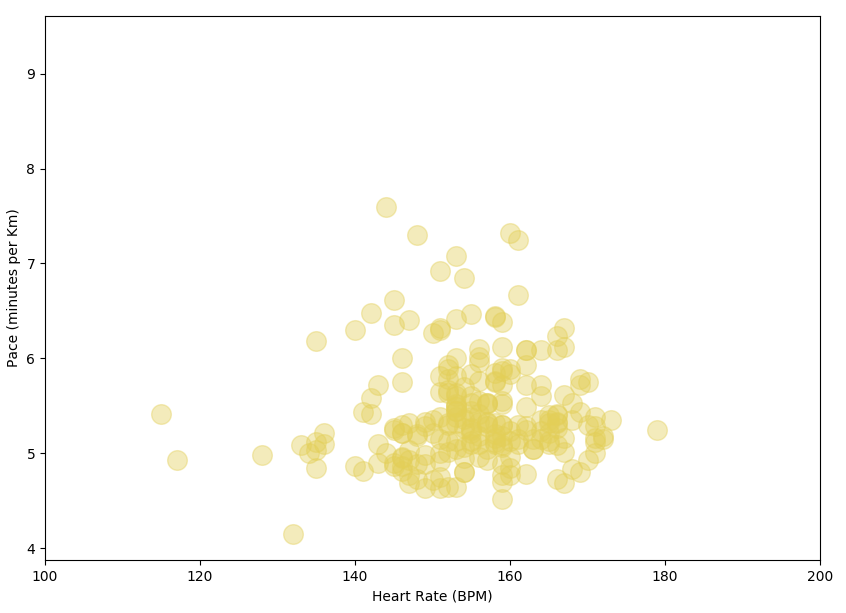
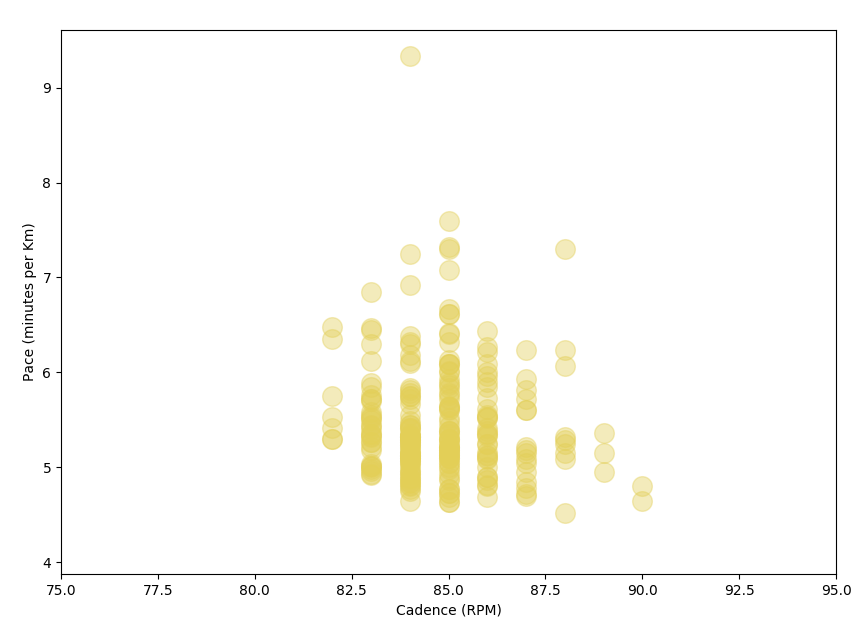
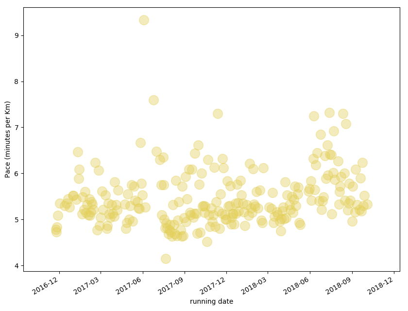
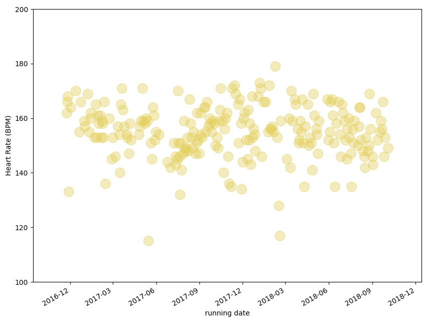

Project Summary¶
Goal¶
- I claim myself being a runner. I wanna prove it, with numbers and figures.
- Although I have been running for a long, I don’t know well whether I’m improving or not.
- Set a future running goal and try to achieve it.
Analysis¶
- Analyzing one run record with module: read_fit
- Analyzing a series of run records with module: read_sequence
Results¶
By running module read_sequence on all my running data, I obtained the results as figures and tables.
The summary table is here Link.
The list of figures are:
- Distance (Km) per run here Link.
- Pace ( minutes per Km) per run here Link.
- Pace as a function of heart rate here Link.
- Pace as a function of cadence here Link.
- Pace as a function of date here Link.
- Heart rate as a function of date here Link.

Figure The distance per run can be very interesting, since that shows how power you’re as a runner.

Figure The pace for each run is another character that identifies the ability of a runner.

Figure The pace as a function of heart rate (HR) shows how HR affects my pace.

Figure The pace as a function of cadence shows the effect of cadence on my pace.

Figure The pace in different day. Pretty stable, right?

Figure The heart rate in different days.
| Item | Value |
|---|---|
| run period | 2016.11.23 to 2018.10.03 |
| number of runs | 245 |
| average total time used in h:m:s | 0:55:36 |
| average number of meters ascended in m | 79.6 |
| average number of meters descended in m | 81.3 |
| time of fastest 1Km in h:m:s | 0:02:09 |
| slowest speed in m/s | 0.20 |
| fastest speed in m/s | 11.21 |
| average speed in m/s | 3.08 |
| overall average cadence in rpm | 84 |
| overall average heart rate in bpm | 144 |
| overall total distance in miles | 1527.3 |
| average distance per run in miles | 6.2 |
| longest distance per run in miles | 26.2 |
| shortest distance per run in miles | 1.5 |
| overall total distance in Km | 2458.0 |
| average distance per run in Km | 10.0 |
| longest distance per run in Km | 42.2 |
| shortest distance per run in Km | 2.4 |
Table Period running summary.

{kind=link}
{kind=link}
{kind=link}
{kind=link}
{kind=link}
{kind=link}